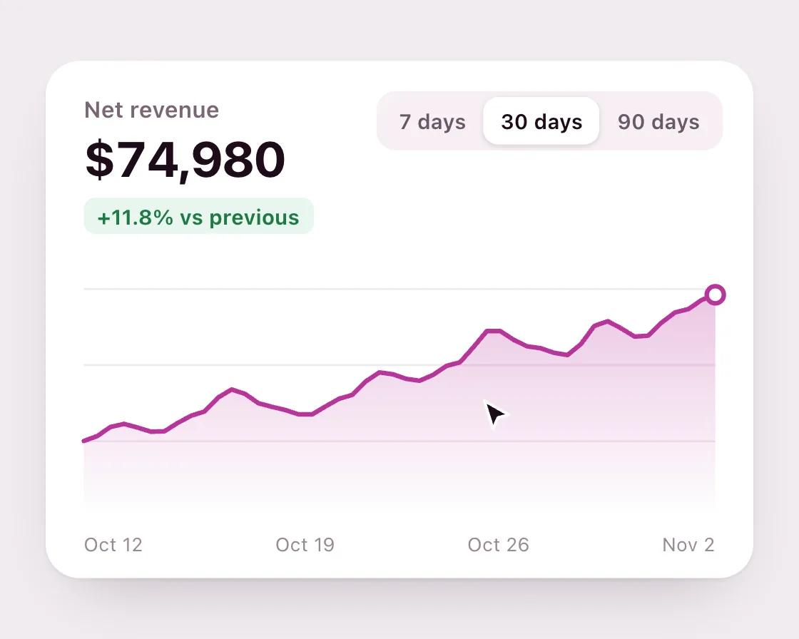

Chart morph
Chart morph is a DOM effect: every dataset resampled to the same 48 points. One plain JavaScript file with no dependencies; add it with npx motion-library add chart-morph.

Open it live, tune it and copy the code
What is Chart morph?
Switching between week, month and quarter morphs the line chart and its area into the new data.
How does Chart morph work?
Each range is resampled to the same 48 points, so any range blends into any other point by point; line, area and end dot share those points.
How do I add Chart morph to my website?
- In your project folder, run
npx motion-library add chart-morph. It writesanimations/chart-morph.js. Needs Node 18 or newer. - Import it and call it with a container element that has a size:
import fx from './animations/chart-morph.js'; const stop = fx(document.querySelector('#hero')); - Call
stop()to clean up, for example when a component unmounts.
Every setting below is also a flag, so you can install it already tuned: npx motion-library add chart-morph --duration 900.
What settings can I tweak?
| Setting | Flag | Default | Range | Step |
|---|---|---|---|---|
| Morph (ms) | --duration | 280 | 150 to 900 | 10 |
| Hold (ms) | --hold | 1700 | 600 to 4000 | 50 |
Specifications
- Renderer
- DOM (CSS and the Web Animations API)
- Category
- Morph & SVG
- Dependencies
- None
- File size
- 8.3 KB, unminified
- Interactive
- Yes: it responds to the pointer
- Reduced motion
- Respects prefers-reduced-motion
- Licence
- MIT-0: use it anywhere, no credit needed
Source code
// Chart morph: every dataset is resampled to the same 48 points before it is drawn, so switching tabs can blend the line and the area point by point instead of redrawing. The chart keeps its place and only the shape of the data changes, which is what the tab switch means.
const PARAMS = { duration: 280, hold: 1700 };
export default function (stage) {
const reduce = matchMedia('(prefers-reduced-motion: reduce)').matches;
const root = document.createElement('div');
root.className = 'cm-root';
const sets = [
{ tab: '7 days', total: '$18,420', delta: '+6.2%', ax: ['Mon', 'Wed', 'Fri', 'Sun'], v: [12, 14, 13, 17, 16, 21, 19] },
{ tab: '30 days', total: '$74,980', delta: '+11.8%', ax: ['Oct 12', 'Oct 19', 'Oct 26', 'Nov 2'], v: [9, 11, 10, 12, 15, 13, 12, 14, 17, 16, 18, 22, 20, 19, 23, 21, 24, 26] },
{ tab: '90 days', total: '$201,300', delta: '−2.4%', ax: ['Aug', 'Sep', 'Oct', 'Nov'], v: [22, 25, 24, 20, 18, 21, 17, 15, 18, 16, 19, 17, 20] },
];
root.innerHTML = `<style>
.cm-root { position: absolute; inset: 0; overflow: hidden; background: radial-gradient(120% 100% at 50% 0%, #1b1b1e, #0d0d0f); font-family: system-ui, -apple-system, sans-serif; }
.cm-b { position: absolute; left: 50%; top: 50%; width: 420px; height: 320px; transform-origin: 0 0; }
.cm-card { position: absolute; left: 24px; top: 24px; width: 372px; height: 272px; border-radius: 18px; background: #fff; box-shadow: 0 1px 2px rgba(42,15,38,.07), 0 16px 36px -18px rgba(42,15,38,.3); }
.cm-lbl { position: absolute; left: 20px; top: 18px; font-size: 12px; font-weight: 600; color: #7a6676; }
.cm-tot { position: absolute; left: 20px; top: 36px; font-size: 26px; font-weight: 720; letter-spacing: -.02em; color: #1d0b1a; font-variant-numeric: tabular-nums; }
.cm-dl { position: absolute; left: 20px; top: 72px; font-size: 11px; font-weight: 650; padding: 3px 7px; border-radius: 6px; background: #e8f6ee; color: #1f7a45; }
.cm-dl.neg { background: #fbe9ec; color: #b4232f; }
.cm-tabs { position: absolute; right: 16px; top: 16px; display: flex; padding: 3px; border-radius: 10px; background: #f6eff4; }
.cm-tab { position: relative; z-index: 1; border: 0; background: none; padding: 6px 9px; font: 600 11px system-ui, sans-serif; color: #6b5867; cursor: pointer; }
.cm-tab.on { color: #1d0b1a; }
.cm-pill { position: absolute; top: 3px; height: calc(100% - 6px); left: 0; border-radius: 8px; background: #fff; box-shadow: 0 1px 3px rgba(42,15,38,.15); transition: transform 300ms cubic-bezier(0.77, 0, 0.175, 1); }
.cm-card svg { position: absolute; left: 0; top: 100px; width: 372px; height: 150px; overflow: visible; }
.cm-ax { position: absolute; left: 20px; right: 20px; bottom: 12px; display: flex; justify-content: space-between; font-size: 10px; color: #9a8996; }
.cm-cur { position: absolute; left: 0; top: 0; width: 22px; height: 22px; pointer-events: none; transition: transform 650ms cubic-bezier(0.23, 1, 0.32, 1); }
.cm-cur.down svg { transform: scale(.86); } .cm-cur svg { width: 100%; height: 100%; transition: transform 120ms; }
${reduce ? '.cm-pill { transition: none; }' : ''}
</style>
<div class="cm-b"><div class="cm-card">
<div class="cm-lbl">Net revenue</div><div class="cm-tot"></div><div class="cm-dl"></div>
<div class="cm-tabs"><div class="cm-pill"></div>${sets.map(s => `<button class="cm-tab" type="button">${s.tab}</button>`).join('')}</div>
<svg viewBox="0 0 372 150"><defs><linearGradient id="cm-g" x1="0" y1="0" x2="0" y2="1"><stop offset="0" stop-color="#b8359a" stop-opacity=".28"/><stop offset="1" stop-color="#b8359a" stop-opacity="0"/></linearGradient></defs>
${[20, 60, 100].map(y => `<line x1="20" x2="352" y1="${y}" y2="${y}" stroke="#f1e8ef"/>`).join('')}
<path class="cm-area" fill="url(#cm-g)"/><path class="cm-line" fill="none" stroke="#b8359a" stroke-width="2.4" stroke-linejoin="round" stroke-linecap="round"/><circle class="cm-dot" r="4.5" fill="#fff" stroke="#b8359a" stroke-width="2.4"/></svg>
<div class="cm-ax"></div>
</div><div class="cm-cur"><svg viewBox="0 0 24 24"><path d="M5 3l14 8-6.2 1.6L10 19z" fill="#1d0b1a" stroke="#fff" stroke-width="1.6" stroke-linejoin="round"/></svg></div></div>`;
stage.append(root);
const $ = s => root.querySelector(s);
const board = $('.cm-b'), area = $('.cm-area'), line = $('.cm-line'), dot = $('.cm-dot'), tot = $('.cm-tot'), dl = $('.cm-dl'), ax = $('.cm-ax'), pill = $('.cm-pill'), cur = $('.cm-cur');
const tabs = [...root.querySelectorAll('.cm-tab')];
const fit = () => { const s = Math.min(stage.clientWidth / 420, stage.clientHeight / 320); board.style.transform = `scale(${s}) translate(-50%, -50%)`; };
const ro = new ResizeObserver(fit); ro.observe(stage); fit();
// Resample each dataset to N points with a smooth (cosine) blend between samples, then map to chart space.
const N = 48, X0 = 20, X1 = 352, Y0 = 118, Y1 = 14;
const ys = sets.map(s => { const lo = 5, hi = 28; return Array.from({ length: N }, (_, i) => {
const f = i / (N - 1) * (s.v.length - 1), a = Math.floor(f), b = Math.min(a + 1, s.v.length - 1), t = (1 - Math.cos((f - a) * Math.PI)) / 2;
return Y0 - ((s.v[a] + (s.v[b] - s.v[a]) * t - lo) / (hi - lo)) * (Y0 - Y1); }); });
const xs = Array.from({ length: N }, (_, i) => X0 + (X1 - X0) * i / (N - 1));
const bez = (x1, y1, x2, y2) => x => { let t = x; for (let i = 0; i < 6; i++) { const cx = 3 * x1 * t * (1 - t) ** 2 + 3 * x2 * t * t * (1 - t) + t ** 3 - x, d = 3 * x1 * (1 - t) ** 2 + 6 * (x2 - x1) * t * (1 - t) + 3 * (1 - x2) * t * t; if (Math.abs(d) < 1e-6) break; t -= cx / d; } t = Math.min(1, Math.max(0, t)); return 3 * y1 * t * (1 - t) ** 2 + 3 * y2 * t * t * (1 - t) + t ** 3; };
const ease = bez(0.77, 0, 0.175, 1);
// reduced motion: a copy of the old line and area fades out while the new data fades in, nothing moves
const ghosts = reduce ? [area, line].map(el => el.parentNode.insertBefore(el.cloneNode(), el)) : [];
let cur0 = ys[0].slice(), fromY = ys[0], toY = ys[0], start = -1e9, idx = 0, raf, manual = -1e9;
const select = i => {
idx = i; fromY = cur0.slice(); toY = ys[i]; start = performance.now();
if (reduce) {
start = -1e9;
ghosts.forEach((g, j) => { g.setAttribute('d', [area, line][j].getAttribute('d') || ''); g.animate([{ opacity: 1 }, { opacity: 0 }], { duration: PARAMS.duration, easing: 'ease-out', fill: 'forwards' }); });
[area, line, dot].forEach(el => el.animate([{ opacity: 0 }, { opacity: 1 }], { duration: PARAMS.duration, easing: 'ease-out' }));
}
const s = sets[i]; tot.textContent = s.total; dl.textContent = s.delta + ' vs previous'; dl.classList.toggle('neg', s.delta[0] === '−');
ax.innerHTML = s.ax.map(a => `<span>${a}</span>`).join('');
tabs.forEach((t, j) => t.classList.toggle('on', j === i));
pill.style.width = tabs[i].offsetWidth + 'px'; pill.style.transform = `translateX(${tabs[i].offsetLeft - 3 + 3}px)`;
};
const onClick = e => { const i = tabs.indexOf(e.target); if (i >= 0) { manual = performance.now(); select(i); } };
$('.cm-tabs').addEventListener('click', onClick);
select(0);
function frame(now) {
const k = ease(Math.min(1, (now - start) / PARAMS.duration));
for (let i = 0; i < N; i++) cur0[i] = fromY[i] + (toY[i] - fromY[i]) * k;
const d = 'M' + xs.map((x, i) => x.toFixed(1) + ' ' + cur0[i].toFixed(1)).join('L');
line.setAttribute('d', d); area.setAttribute('d', d + `L${X1} 140L${X0} 140Z`);
dot.setAttribute('cx', X1); dot.setAttribute('cy', cur0[N - 1].toFixed(1));
raf = requestAnimationFrame(frame);
}
raf = requestAnimationFrame(frame);
const T = new Set(), after = (ms, f) => { const id = setTimeout(() => { T.delete(id); f(); }, ms); T.add(id); };
const move = (x, y) => { cur.style.transform = `translate(${x}px, ${y}px)`; };
const tabPos = i => [24 + tabs[i].offsetLeft + $('.cm-tabs').offsetLeft + tabs[i].offsetWidth / 2 - 4, 24 + 16 + 14];
move(300, 230);
let n = 0;
const cycle = () => {
const i = (idx + 1) % sets.length; move(...tabPos(i));
after(650, () => { cur.classList.add('down'); after(120, () => { cur.classList.remove('down'); if (performance.now() - manual > 4000) select(i); }); });
after(1000, () => move(250 + (n++ % 2) * 60, 200));
after(1000 + PARAMS.hold, cycle);
};
after(500, cycle);
return () => { cancelAnimationFrame(raf); T.forEach(clearTimeout); T.clear(); ro.disconnect(); $('.cm-tabs').removeEventListener('click', onClick); root.remove(); };
}